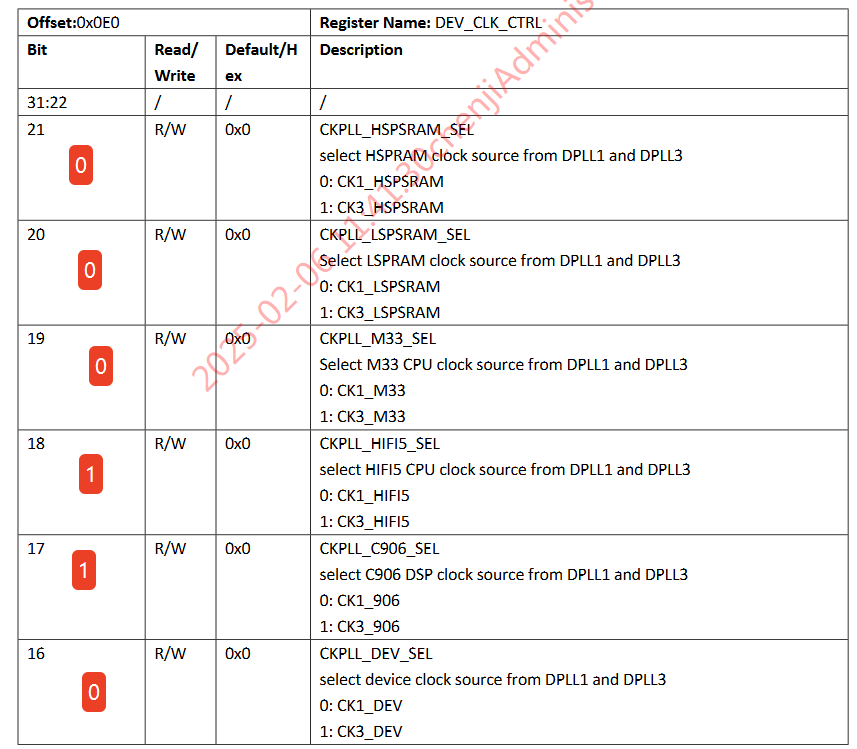
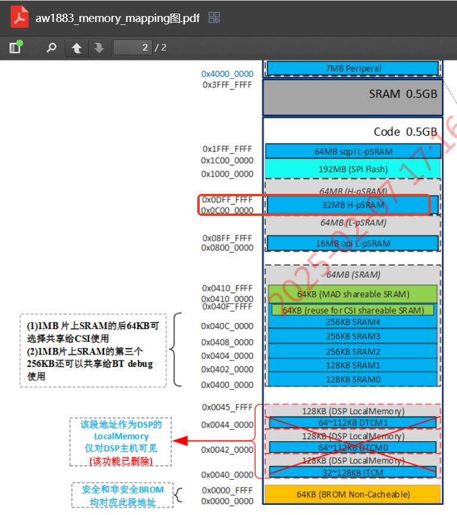
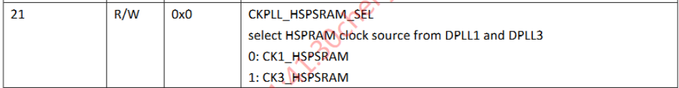
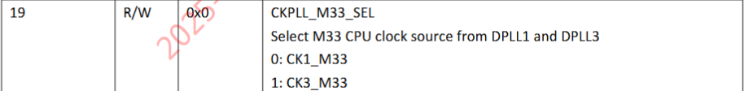
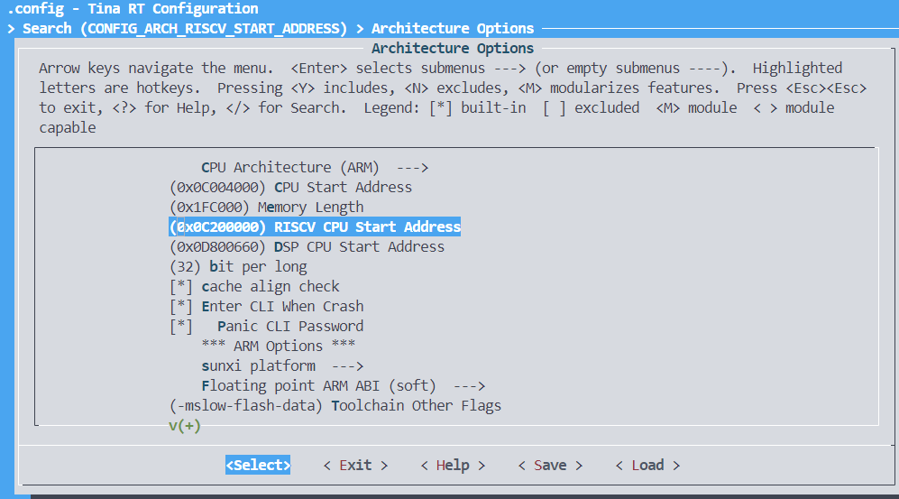
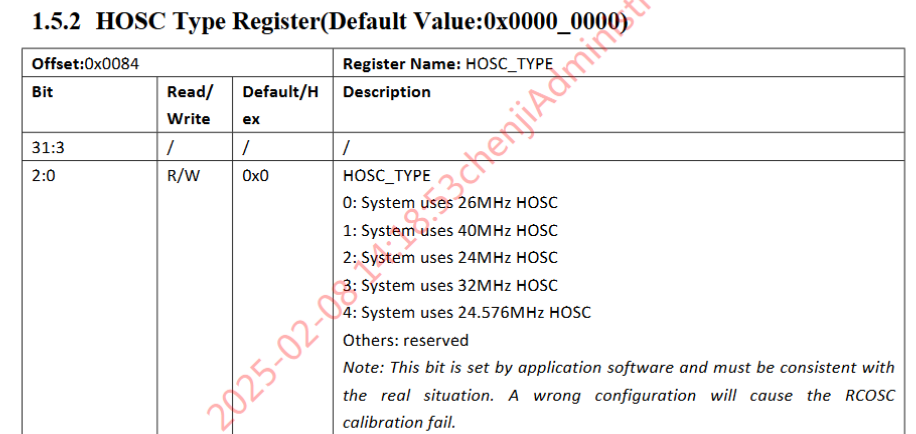
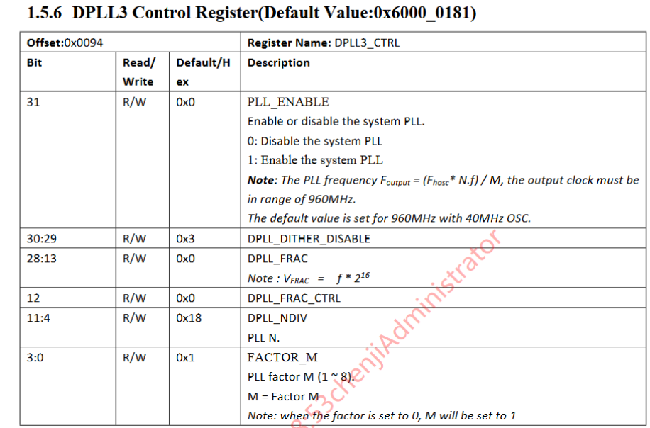
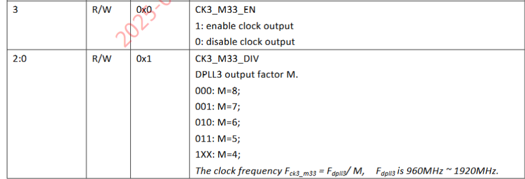
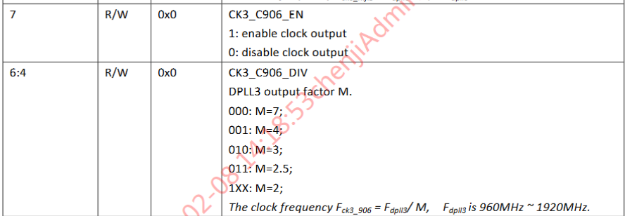
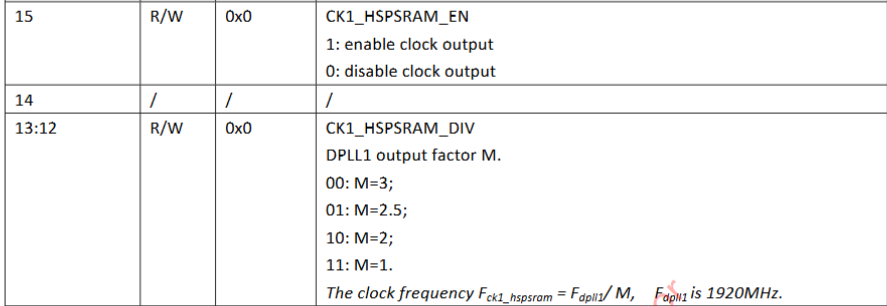

pccli命令可以执行他核的命令，用法：
rpccli [arm|dsp|rv] commandname [arg0 …]
RV验证固件
M33、DSP均以默认频率运行，以DPLL1可配置频率为主，默认频率为M33-192M，RV-533M，DSP-400M
提供cpu频率查看cmd接口，补丁内容如下：
源文件：r128-dev/lichee/rtos/arch/risc-v/sun20iw2p1/cpufreq.c
#include <stdio.h>
#include <console.h>
#include <FreeRTOS.h>int cmd_get_cpu_freq(void)
{
uint32_t cpu_freq = 0;
int ret = 0;
/*get cpu frequency */
ret = get_cpu_freq(&cpu_freq);
if (ret) {
printf("get_cpu_freq failed, ret: %d\n", ret);
return -1;
}
printf("get_cpu_freq ok, frequency: %d Hz\n", cpu_freq);
return 0;
}
FINSH_FUNCTION_EXPORT_CMD(cmd_get_cpu_freq, get_cpu_freq, get current cpu frequency);
将HS-PSRAM从DPLL3切换到DPLL1中，频率根据当前条件尽量配高频，默认运行
更改HS-PSRAM频率的相关源文件：
r128-dev/lichee/brandy-2.0/spl/drivers/hpsram/hpsram.c
相关函数：
hpsram_init：开机默认初始化hpsram参数，其中包括了HPSRAM的PLL选择和频率设置。
hpsram_clk_init：设置PSRAM的PLL来源，分频系数等。
// sr32(REG_ADDR, num_bit, len, val);表示对寄存器地址REG_ADDR的num_bit:num_bit-1的位数赋值为val
static __inline void hpsram_clk_init(__dram_para_t *para)
{
...
if (((para->dram_tpr7>>0) & 0x1) == 0) {
printf("DPLL1 is chosen\n");
sr32(DEV_CLK_CTRL,21,1,0); //choose source DPLL1
sr32(DPLL1_OUT_CTRL,15,1,1); //enable DPLL1 clock output
sr32(DPLL3_OUT_CTRL,15,1,0); //disable DPLL3 clock output
} else {
printf("DPLL3 is chosen\n");
sr32(DEV_CLK_CTRL, 21, 1, 1); //choose source DPLL3
// CCMU_AON DPLL LS clk
sr32(DPLL1_OUT_CTRL, 15, 1, 0); //disable DPLL1 clock output
sr32(DPLL3_OUT_CTRL, 15, 1, 1); //enable DPLL3 clock output
}
...
}
从源代码中可以知道，HSPSRAM选择时钟来源可以选择DPLL1和DPLL3，通过para->dram_tpr7来决定，如果为0则选择DPLL1，如果为1则选择DPLL3。而dram_tpr7的值可以通过sys_config.fex来设置，如下：
//sys_config.fex
;for compatibility, provide the 'dram_para' configuration. otherwise update_boot0 program will exit without writing boot0 header
; hspsram init if (dram_clk != 0); lspsram init if ( dram_no_lpsram == 0)
[dram_para]
...
dram_tpr7 = 0x0
...
另外，DPLL的时钟分频系数通过可以由以下代码设置：
//choose DIV for ddr clk
//CK1_HSPSRAM_DIV 0:M=3; 1:M=2.5; 2:M=2; 3:M=1
sr32(DPLL1_OUT_CTRL,12,2,3);
//CK3_HSPSRAM_DIV 00:M=3;01:M=2.5;10:M=2;11:M=1
sr32(DPLL3_OUT_CTRL,12,2,3);
要求中尽量将DPLL1设置高频，因此需要将分频系数设置为M=1。
将RV挂载到DPLL3上，DPLL3的时钟源尽量只给RV使用
RV核的DPLL配置相关源文件：
r128-dev/lichee/rtos/arch/arm/armv8m/sun20iw2p1/sun20i.c
相关函数：
sun20i_boot_c906：启动c906时对其进行配置初始化，包括DPLL配置。
相关代码段：
#define RISCV_PLL_CLK_SOURCE RISCV_DPLL3_CLK
...
#if (RISCV_PLL_CLK_SOURCE == RISCV_DPLL3_CLK)
clk_ck3_c906 = hal_clock_get(HAL_SUNXI_AON_CCU, CLK_CK3_C906);
ret = hal_clock_enable(clk_ck3_c906);
if (HAL_CLK_STATUS_OK != ret) {
ret = -1;
goto exit_with_put_dpll3_clk;
}
ret = hal_clk_set_rate(clk_ck3_c906, RISCV_PLL_CLK_FREQ);
if (HAL_CLK_STATUS_OK != ret) {
ret = -1;
goto exit_with_put_dpll3_clk;
}
#endif
#if (RISCV_PLL_CLK_SOURCE == RISCV_DPLL1_CLK)
//set clk_ck1_c906 clk to 480M
//sr32(CCMU_AON_BASE+0xa4, 4, 3, 0x1);
//set clk_ck1_c906 clk to 640M
//sr32(CCMU_AON_BASE+0xa4, 4, 3, 0x2);
ret = hal_clk_set_rate(clk_ck1_c906, RISCV_PLL_CLK_FREQ);
if (HAL_CLK_STATUS_OK != ret) {
ret = -1;
goto err2;
}
#endif
根据以上代码内容可知，C906选择DPLL由RISCV_PLL_CLK_SOURCE决定，只需要定义RISCV_PLL_CLK_SOURCE为RISCV_DPLL3_CLK即可完成将RV挂载到DPLL3上。
执行p 0x4004c4e0查看寄存器的值为0x00062191，因此，以上设备有DSP和RV挂载在DPLL3上，其他设备挂载在DPLL1上，需要将DSP重新挂载在DPLL1上。

添加宏定义选择DSP挂载到DPLL1上，补丁内容如下：
diff --git a/arch/arm/armv8m/sun20iw2p1/sun20i.c b/arch/arm/armv8m/sun20iw2p1/sun20i.c
index 00999ef33..41d94f419 100755
--- a/arch/arm/armv8m/sun20iw2p1/sun20i.c
+++ b/arch/arm/armv8m/sun20iw2p1/sun20i.c
@@ -951,6 +951,10 @@ err1:
}
#endif
+#define DSP_DPLL1_CLK 1
+#define DSP_DPLL3_CLK 3
+#define DSP_PLL_CLK_SOURCE DSP_DPLL1_CLK
+
#if defined(CONFIG_ARCH_ARMV8M_DEFAULT_BOOT_DSP) || defined(CONFIG_COMMAND_BOOT_DSP) \
|| defined(CONFIG_PM_SUBSYS_DSP_SUPPORT)
#define DSP_CORE_CLOCK_FREQ CONFIG_DSP_CLOCK_FREQ
@@ -999,9 +1003,25 @@ int __sun20i_boot_dsp_with_start_addr(uint32_t dsp_start_addr)
goto err2;
}
- //set clk_ck1_hifi5 clk to 384M
- /* sr32(CCMU_AON_BASE+0xa4, 8, 3, 0x2); */
+#if (DSP_PLL_CLK_SOURCE == DSP_DPLL1_CLK)
+#define DSP_CORE_CLOCK_FREQ 384000000
+ // set clk_ck1_hifi5 clk to 384M
+ // sr32(CCMU_AON_BASE+0xa4, 8, 3, 0x2);
+ ret = hal_clk_set_rate(clk_ck1_hifi5, DSP_CORE_CLOCK_FREQ);
+ if (HAL_CLK_STATUS_OK != ret) {
+ ret = -1;
+ goto err1;
+ }
+ /*set clk_ck_hifi5 source to clk_ck1_hifi5*/
+ // sr32(CCMU_AON_BASE+0xe0, 18, 1, 0x0);
+ clk_ck_hifi5 = hal_clock_get(HAL_SUNXI_AON_CCU, CLK_CKPLL_HIFI5_SEL);
+ ret = hal_clk_set_parent(clk_ck_hifi5, clk_ck1_hifi5);
+ if (HAL_CLK_STATUS_OK != ret) {
+ ret = -1;
+ goto err3;
+ }
+#else
//set clk_ck3_hifi5 clk to 400M
//sr32(CCMU_AON_BASE+0xa8, 8, 3, 0x3);
ret = hal_clk_set_rate(clk_ck3_hifi5, DSP_CORE_CLOCK_FREQ);
@@ -1018,6 +1038,7 @@ int __sun20i_boot_dsp_with_start_addr(uint32_t dsp_start_addr)
ret = -1;
goto err3;
}
+#endif
//set clk_ck_hifi5_div source to clk_ck_hifi5
//sr32(CCMU_BASE+0x068, 4, 2, 0x2);
重新执行p 0x4004c4e0查看寄存器的值为0x00022191，可以知道DSP已成功挂载到DPLL1上了。
支持RV跑memtester，跑在HS-PSRAM上
支持RV跑memtester
用法：memtester -s {内存大小} [-m testmask] [-t 循环次数]
比如：memtester -s 8k -t 2
"Usage: %s -s <size>[B|K|M|G] [-m testmask] [-t times]\n"
"\n"
"[testmask]: specify tests which we want run.\n"
"bit0 Compare XOR\n"
"bit1 Compare SUB\n"
"bit2 Compare MUL\n"
"bit3 Compare DIV\n"
"bit4 Compare OR\n"
"bit5 Compare AND\n"
"bit6 Sequential Increment\n"
"bit7 Solid Bits\n"
"bit8 Block Sequential\n"
"bit9 Checkerboard\n"
"bit10 Bit Spread\n"
"bit11 Bit Flip\n"
"bit12 Walking Ones\n"
"bit13 Walking Zeroes\n"
"bit14 8-bit Writes(ifdef TEST_NARROW_WRITE)\n"
"bit15 16-bit Writes(ifdef TEST_NARROW_WRITE)\n"
"\n"
"eg:\n"
" memtester -s 10M -m 0xc -t 1\n"
" means run Compare DIV&MUL tests only to test 10M memory loop 1 time.\n",
RV跑在HS-PSRAM上
RV核有可能跑在HS-PSRAM或者SRAM上，可以通过加载地址确认。
根据memory mapping图，HS-PSRAM起始地址为0x0C开头，SRAM起始地址为0x04开头，因此通过打印RV核的起始地址即可判断RV核运行在哪个位置上。

RV核启动地址相关代码：
相关代码源文件：r128-dev/lichee/rtos/arch/arm/armv8m/sun20iw2p1/sun20i.c
相关源代码：
int sun20i_boot_c906(void)
{
...
#if CONFIG_ARCH_RISCV_START_ADDRESS
put_wvalue(RISCV_CFG_BASE + 0x004, CONFIG_ARCH_RISCV_START_ADDRESS);
#else
put_wvalue(RISCV_CFG_BASE + 0x004, rtos_spare_head.reserved[0]);
#endif
...
}
可通过插入打印CONFIG_ARCH_RISCV_START_ADDRESS的值直接确定RV核的起始地址，从而确定运行位置。
也可以直接根据boot0启动时输出的log来确定：
[294]loadparts:arm-hpsram@:rv-hpsram@:dsp-hpsram@:config@0xc000000
[300]load_start_sector=41008
[303]load arm-hpsram to 0xc004000 from 20996224, size 1186320
[308]load_start_sector=41008, load_sectors=2317, loadaddr=0x0c004000,first_part_size=0x00000180
[419]load_start_sector=43408
[422]load rv-hpsram to 0xc200000 from 22225024, size 4031544
[428]load_start_sector=43408, load_sectors=7874, loadaddr=0x0c200000,first_part_size=0x00000180
[783]load_start_sector=51288
[786]load dsp-hpsram to 0xd800000 from 26259584, size 503924
[792]load_start_sector=51288, load_sectors=984, loadaddr=0x0d800000,first_part_size=0x00000180
[844]load_start_sector=55288
通过打印可知，RV核的起始地址为0xc200000，ARM核的起始地址为 0x0c00400，故而可以RV和ARM都已经运行在HS-PSRAM上。
支持查看RV占用率，确保RV运行memtester正常
将RV、M33内部LDO供电电压修改至1.08V，DSP内部供电保持1.175V不变
相关源文件：r128-dev/lichee/rtos/arch/risc-v/sun20iw2p1/cpufreq.c
相关接口：
set_cpu_voltage：设置当前cpu LDO电压
get_cpu_voltage：获取当前cpu LDO电压
在上面接口基础上添加cmd接口，补丁内容如下：
diff --git a/arch/risc-v/sun20iw2p1/cpufreq.c b/arch/risc-v/sun20iw2p1/cpufreq.c
index e5329c00f..1a2a58b32 100644
--- a/arch/risc-v/sun20iw2p1/cpufreq.c
+++ b/arch/risc-v/sun20iw2p1/cpufreq.c
@@ -32,6 +32,9 @@
#include "cpufreq.h"
#include <hal_clk.h>
+#include <stdio.h>
+#include <console.h>
+#include <FreeRTOS.h>
#ifdef CONFIG_DRIVERS_EFUSE
#include <sunxi_hal_efuse.h>
#endif
@@ -156,6 +159,42 @@ int get_cpu_voltage(uint32_t *cpu_voltage)
return 0;
}
+static int cmd_set_cpu_voltage(int argc, const char **argv)
+{
+ uint32_t vol = 0;
+ int ret = 0;
+ if (argv[1] == NULL) {
+ printf("please input cpu voltage (mV)\n");
+ return -1;
+ }
+
+ vol = strtol(argv[1], NULL, 0);
+ ret = set_cpu_voltage(vol);
+ if (ret) {
+ printf("set_cpu_voltage failed, ret: %d\n", ret);
+ return -1;
+ }
+ printf("set_cpu_voltage ok, voltage: %d mV\n", vol);
+ return 0;
+}
+FINSH_FUNCTION_EXPORT_CMD(cmd_set_cpu_voltage, set_cpu_voltage, set current cpu voltage);
+
+static int cmd_get_cpu_voltage(void)
+{
+ uint32_t cpu_voltage = 0;
+ int ret = 0;
+
+ /*get cpu voltage */
+ ret = get_cpu_voltage(&cpu_voltage);
+ if (ret) {
+ printf("get_cpu_voltage failed, ret: %d\n", ret);
+ return -1;
+ }
+ printf("get_cpu_voltage ok, voltage: %d mV\n", cpu_voltage);
+ return 0;
+}
+FINSH_FUNCTION_EXPORT_CMD(cmd_get_cpu_voltage, get_cpu_voltage, get current cpu voltage);
+
static int set_first_div_freq(uint32_t target_freq, hal_clk_t next_clk)
{
int ret = 0;
@@ -339,3 +378,20 @@ int cpufreq_vf_init(void)
return 0;
}
测试：
设置LDO电压为1.08V：
c906>set_cpu_voltage 1080
set_cpu_voltage ok, voltage: 1080 mV
c906>get_cpu_voltage
get_cpu_voltage ok, voltage: 1100 mV
设置LDO电压1.08V成功，但是最后读取出来的LDO电压为1.1V。
原因：
根据宏定义#define VOLTAGE_STEP 25以及set_cpu_voltage函数的具体实现：
ldo_vol_field = ldo_cal + ((int)vol - LDO_CAL_BASE) / VOLTAGE_STEP;
可以知道步进电压为25mV，也就是设置的电压必须为25mV的整数倍，因此最接近1.08V的电压为1.075V，可以尝试设置LDO电压值为1075。
c906>set_cpu_voltage 1075
set_cpu_voltage ok, voltage: 1075 mV
c906>get_cpu_voltage
get_cpu_voltage ok, voltage: 1075 mV
可以看到成功设置为LDO电压为1.075V。
验证
1、 M33、DSP 均以默认频率运行，以 DPLL1可配置频率为主 ，默认频率为M33-192M，RV-533M，DSP-400M；
M33固件下，重启查看log：
M33 CPU Clock Freq: 192 MHz
C906 CPU Freq: 480 MHz
DSP core clock frequency: 384000000Hz
RV固件下，重启查看log：
M33 CPU Clock Freq: 192 MHz
C906 CPU Freq: 533 MHz
DSP core clock frequency: 384000000Hz
2、将HS-PSRAM 从DPLL3切换到DPLL1中 ，频率根据当前条件 尽量配高频 ， 默认运行；
在RV或者M33固件下，执行以下命令：
c906>p 0x4004c4e0 //读取system clock control寄存器
reg_addr[0x4004c4e0]=0x00022191 //bit21为0，说明HS-PSRAM时钟源为DPLL1

3.1、将 RV挂载到DPLL3 上，DPLL3的时钟源尽量只给RV使用；
在RV固件下，执行以下命令：
c906>p 0x4004c4e0 //读取system clock control寄存器
reg_addr[0x4004c4e0]=0x00022191 //bit17为1，说明RV时钟源为DPLL3
bit18~bit21为0，表示HSPSRAM、LSPSRAM、M33、DSP的时钟源都是DPLL1，DPLL3的时钟源只给RV使用。
3.2、将 M33挂载到DPLL3 上，DPLL3的时钟源尽量只给M33使用；
在M33固件下，执行以下命令：
c906>p 0x4004c4e0//读取system clock control寄存器
reg_addr[0x4004c4e0]=0x00082191//bit19为1，说明M33时钟源为DPLL3

bit18、bit20和bit21为0，表示HSPSRAM、LSPSRAM、RV、DSP的时钟源都是DPLL1，DPLL3的时钟源只给M33使用。
4、支持 RV跑memtester ，跑在HS-PSRAM上；
在RV或者M33固件下，执行以下命令：
c906>memtester -s 8k -t 1
memtester version 4.3.0 (64-bit)
Copyright (C) 2001-2012 Charles Cazabon.
Licensed under the GNU General Public License version 2 (only).
sysconf(_SC_PAGE_SIZE) not supported; using pagesize of 8192
memsuffix k
want 0MB (8192 bytes)
got 0MB (8192 bytes) in 0xc643d20Loop 1/1:
<============Prepare============>
Stuck Address : ok
Random Value : ok
<============Start test============>
Compare XOR : ok
Compare SUB : ok
Compare MUL : ok
Compare DIV : ok
Compare OR : ok
Compare AND : ok
Sequential Increment: ok
Solid Bits : ok
Block Sequential : ok
Checkerboard : ok
Bit Spread : ok
Bit Flip : ok
Walking Ones : ok
Walking Zeroes : ok
Done.
c906>rpccli arm memtester -s 8k -t 1
memtester version 4.3.0 (32-bit)
Copyright (C) 2001-2012 Charles Cazabon.
Licensed under the GNU General Public License version 2 (only).
sysconf(_SC_PAGE_SIZE) not supported; using pagesize of 8192
memsuffix k
want 0MB (8192 bytes)
got 0MB (8192 bytes) in 0xa5a5a5a50c13c220Loop 1/1:
<============Prepare============>
Stuck Address : ok
Random Value : ok
<============Start test============>
Compare XOR : ok
Compare SUB : ok
Compare MUL : ok
Compare DIV : ok
Compare OR : ok
Compare AND : ok
Sequential Increment: ok
Solid Bits : ok
Block Sequential : ok
Checkerboard : ok
Bit Spread : ok
Bit Flip : ok
Walking Ones : ok
Walking Zeroes : ok
Done.
查看RV核和M33核的启动地址：

地址为0xC开头，表明RV和M33都运行在RPSRAM中。
5、支持查看RV占用率，确保RV运行memtester正常；
RV或M33固件下，直接运行run-time-stats
c906>run-time-stats
Task Abs Time % Time
****************************************
CLI 616 <1%
IDLE 516619 99%
adbd-input 0 <1%
tcpip 0 <1%
nand_rcd 0 <1%
nftld 0 <1%
amp-admin 0 <1%
Tmr Svc 0 <1%
amp-ser1 0 <1%
amp-ser2 0 <1%
amp-ser3 0 <1%
amp-ser4 0 <1%
pm_suspend 0 <1%
hub-main-thread 0 <1%
amp-send-task 0 <1%
amp-recv-task 0 <1%
udc_vbus_det 0 <1%
adbd-output 1 <1%
AudioMT2 0 <1%
cpu_zone 0 <1%
disp2 258 <1%
amp-ser0 0 <1%
6、 将RV、M33内部LDO供电电压修改至1.08V，DSP内部LDO供电保持1.175V不变；
RV固件下：
c906>set_cpu_voltage 1075 //设置RV内部LDO供电电压
set_cpu_voltage ok, voltage: 1075 mV
c906>get_cpu_voltage //读取RV内部LDO供电电压
get_cpu_voltage ok, voltage: 1075 mV
M33固件下：
c906>rpccli arm set_cpu_voltage 1075 //设置M33内部LDO供电电压
set_cpu_voltage ok, voltage: 1075 mV
c906>rpccli arm get_cpu_voltage //读取M33内部LDO供电电压
get_cpu_voltage ok, voltage: 1075 mV
M33验证固件
将M33挂载到DPLL3上，DPLL3的时钟源尽量只给M33使用
相关源代码文件：r128-dev/lichee/rtos/arch/arm/armv8m/sun20iw2p1/sun20i.c
相关函数：static int ar200a_clk_set(u32 freq)
相关代码补丁：
diff --git a/arch/arm/armv8m/sun20iw2p1/sun20i.c b/arch/arm/armv8m/sun20iw2p1/sun20i.c
index 1c7cb1abd..509f3b516 100755
--- a/arch/arm/armv8m/sun20iw2p1/sun20i.c
+++ b/arch/arm/armv8m/sun20iw2p1/sun20i.c
@@ -173,12 +173,16 @@ err:
* we fixed ck1_m33 to 384M,
* so freq only support 384M,192M,128M,96M,64M,48M,32M,24M
*/
+ #define M33_DPLL1_CLK 1
+ #define M33_DPLL3_CLK 3
+ #define M33_PLL_CLK_SOURCE M33_DPLL3_CLK
static int ar200a_clk_set(u32 freq)
{
u32 rate;
- hal_clk_t clk_ck1_m33, clk_ck_m33, clk_sys, clk_ar200a_f;
+ hal_clk_t clk_ck1_m33, clk_ck3_m33, clk_ck_m33, clk_sys, clk_ar200a_f;
hal_clk_status_t ret = 0;
+#if (M33_PLL_CLK_SOURCE == M33_DPLL1_CLK)
/*set ck1_m33_clk*/
//sr32(CCMU_AON_BASE+0xa4, 3, 1, 1);
//0x4004c4a4: 0x80800008
@@ -207,12 +211,25 @@ static int ar200a_clk_set(u32 freq)
ret = -1;
goto err3;
}
-
+ printf("M33: chose clock source to DPLL1\n");
+#else
+ printf("DPLL3\n");
+ /*enable ck3_m33_clk*/
+ sr32(CCMU_AON_BASE+0xa8, 3, 1, 1);
+ //0x4004c4a4: 0x80800008
+ /*fixed 384M*/
+ sr32(CCMU_AON_BASE+0xa8, 0, 3, 0x3);
+ //0x4004c4a4: 0x8080000b
+ /*set ck_m33_clk*/
+ sr32(CCMU_AON_BASE+0xe0, 19, 1, 1);
+ //0x4004c4e0: 0x00000101
+ printf("M33: chose clock source to DPLL3\n");
+#endif
/*set sys_clk*/
//sr32(CCMU_AON_BASE+0xe0, 8, 4, 0x7);
//0x4004c4e0: 0x00000701
clk_sys = hal_clock_get(HAL_SUNXI_AON_CCU, CLK_SYS);
- ret = hal_clk_set_rate(clk_sys, freq);
+ ret = hal_clk_set_rate(clk_sys, freq); //freq=192MHz
if (HAL_CLK_STATUS_OK != ret) {
ret = -1;
goto err4;
...
查看cpu频率
M33和C906
（1）确定HOSC时钟源：
p 0x4004c484 //查看bit0:2的值， 根据下面信息直接确定f_hosc的值

（2）确定DPLL3的时钟频率：
p 0x4004c494 //f_dpll3=(f_hosc*N)/M，N由bit4:11决定，M由0:3决定

（3）确定M33的频率

c906>p 0x4004c4a8 //查看bit0:2的值，直接确定分频系数M，那么f_m33=f_dpll3/M
（4）确定C906的频率

c906>p 0x4004c4a8 //查看bit4:6的值，直接确定分频系数M，那么f_c906=f_dpll3/M
HPSRAM

p 0x4004c4a8 //查看分频系数M，直接计算f_hpsram=f_dpll1/M